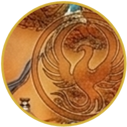

LE CLAN DU PHÉNIX
Cœur spirituel, érudit et théologique de Rokugan, le Clan du Phénix conserve la plus grande bibliothèque de parchemins sacrés et de traités ésotériques de l'Empire. Gouverné par une théocratie de maîtres des cinq Éléments (le Conseil des Cinq Maîtres Isawa), le clan fait primer la communion pacifique avec les esprits et la préservation de la vie sur les ambitions belliqueuses. Ses bushi Shiba ont prêté le serment solennel de servir de rempart physique aux shugenja, tandis que les érudits Asako veillent sur l'histoire et les voies de l'illumination.

1. Origine Sacrée & Le Serment de Shiba
Lors de la chute des Kami, la tribu humaine menée par le sorcier Isawa refusa initialement de se soumettre aux nouveaux dieux, disposant déjà d'une maîtrise avancée de la magie élémentaire. Conscient que cette science était indispensable à la préservation de l'Empire contre les forces corrompues de Fu Leng, le Kami Shiba déposa son sabre devant Isawa et s'agenouilla humblement.
Cette alliance consacra un serment perpétuel : les descendants de Shiba s'engagèrent à protéger physiquement les lanceurs de sorts au péril de leur propre existence, confiant la direction politique et spirituelle du clan au Conseil des Cinq Maîtres Élémentaires (Air, Terre, Feu, Eau et Vide).
Rouge écarlate, orange safran, pourpre et touches d'or céleste. Soies légères ornées de motifs de flammes ou d'ailes de Phénix, parchemins de prières bénis et port sobre du daisho.
Histoire clanique : The Great Clans, p. 145-155. Magie et Ishiken-do : Emerald Empire, p. 74-78. Les secrets du Vide : The Book of Void.
Profil de Création PJ
- Anneau Majeur : Vide & Éléments
- Kami Fondateur : Shiba
- Gouvernance : Conseil des 5 Maîtres
- Palais Principaux : Kyuden Isawa & Shiro Shiba
- Spécialité : Haute Théologie & Yojimbo
- Livre de Base 4e : Pages 123-125
2. Lignées du Clan & Familles Vassales (Familles Bushi en tête)
Livre de Base 4e Édition, p. 124-127 ; The Great Clans, p. 181-185, 287, 289, 291.Famille Shiba
+1 PerceptionDescendants du Kami Shiba liés par son serment d'abnégation envers Isawa. Guerriers philosophes et artisans accomplis, ils servent de yojimbo dévoués aux prêtres du clan et étudient la poésie comme la lance.
🌿 Familles Vassales (2 : Nasu, Sodona) ▾
- Nasu : Ancienne famille impériale sauvée de la chute du Gozoku par Shiba Gaijushiko ; bureaucrates isolés et discrets assurant la gestion administrative du Phénix. (Great Clans p. 287)
- Sodona : Créée au IXe siècle après la mort d'un Champion du Phénix ; fournit des yojimbo d'élite chargés de protéger spécifiquement les nobles et dignitaires Shiba. (Great Clans p. 287)
Famille Isawa
+1 VolontéLignée dirigeante et autorité mystique absolue du clan via le Conseil des Cinq Maîtres Élémentaires. Les shugenja Isawa ne souffrent d'aucune déficience élémentaire native et forment les rarissimes Ishiken manipulant l'Anneau de Vide.
🌿 Familles Vassales (1 : Shingon) ▾
- Shingon : Descendants d'Asako Shingon (XIIe s.) élevés après la forge de cinq nemuranai élémentaires avec Iuchi Yogosha ; maîtres dans l'éveil élémentaire d'objets sacrés. (Great Clans p. 291)
Famille Asako
+1 IntuitionLignée d'historiens, de médecins et de diplomates pacifiques conservant les plus vastes archives impériales. Elle abrite également les mystiques Henshin ainsi que les redoutés Inquisiteurs Asako.
🌿 Familles Vassales (2 : Chukan, Nani) ▾
- Chukan : Fondée au IIe siècle par l'érudit Asako Chukan ; bibliothécaires infatigables cataloguant l'immense fonds de parchemins des temples Asako. (Great Clans p. 287)
- Nani : Guetteurs spirituels fondés après le sauvetage du premier Henshin égaré ; chargés de veiller à ce qu'aucun Henshin ne sombre sur une Fausse Voie. (Great Clans p. 287)
Famille Agasha
+1 PerceptionAncienne famille du Dragon ayant rejoint le Phénix au XIIe siècle. Chercheurs, herboristes et alchimistes, les Agasha combinent la théologie à l'expérimentation matérielle pour transposer les Éléments.
🌿 Familles Vassales (2 : Atsumaru, Izaku) ▾
- Atsumaru : Forestiers fidèles d'origine rônin ayant suivi les Agasha lors de leur départ du Dragon pour récolter herbes rares et réactifs alchimiques. (Great Clans p. 287)
- Izaku : Gardiens de la grande Bibliothèque Izaku de savoirs magiques ; unique famille vassale servant simultanément le Phénix (Agasha) et le Dragon (Tamori) par décret impérial. (Great Clans p. 289)
3. Doctrine Théologique & Pratique du Bushido
Références : Livre de Règles 4e Édition, p. 66-67, 91-94 ; Emerald Empire, p. 74-77.La Compassion (Jin)
Le Phénix considère que chaque vie fauchée sur un champ de bataille représente un échec spirituel. La doctrine du clan prescrit d'apaiser les conflits par l'arbitrage moral et la médiation avant le recours aux armes. Même au combat, les guerriers Shiba cherchent à neutraliser la menace sans cruauté inutile.
Responsabilité Magique
La manipulation des forces élémentaires est envisagée comme un sacerdoce sacré plutôt qu'un outil de domination politique. Les Isawa veillent rigoureusement à empêcher la propagation de la Souillure et des magies de sang (Maho), appliquant une surveillance étroite sur toute recherche hétérodoxe.
Diplomatie Clanique
Le clan entretient des relations pacifiques et respectueuses avec le Clan de la Grue. Le mysticisme du Dragon est compris, bien que la sécession des Agasha ait suscité des tensions historiques. L'impulsivité du Lion est perçue comme un danger constant, tandis que les méthodes du Scorpion sont surveillées avec sévérité.
4. Écoles de Base Officielles (Rangs 1 à 5)
Core pp. 123-125 ; Great Clans p. 199 ; Emerald Empire p. 123.Bénéfice : +1 Agilité • Honneur : 5.5
Compétences : Défense, Kenjutsu, Kyujutsu, Méditation (Récupération du Vide), Lances, Connaissance : Théologie, une compétence Bugei ou Noble.
Équipement : Armure légère, vêtements robustes, Daisho, 1 arme, nécessaire de voyage, 5 koku.
📜 Techniques d'École (Rangs 1 à 5) ▾
- Rang 1 — La Voie du Phénix : Lorsque vous dépensez 1 Vide pour +1g1 sur un jet, vous pouvez en dépenser 2 (pour +2g2). Manœuvre Garde par Action Gratuite, mais le protégé ne reçoit que +5 ND d'Armure (au lieu de +10).
- Rang 2 — Danser avec les Éléments : En choisissant votre Posture, désignez une cible à ≤ 9 m (30') : vous augmentez ou diminuez de 5 le ND de tout sort qu'elle lance ou qui la cible (de même quand vous êtes ciblé).
- Rang 3 — Un avec le Vide : En phase de Réactions si un autre personnage a dépensé du Vide ce Round, regagnez 1 Vide (peut dépasser le max jusqu'à fin d'escarmouche ; max 2/escarmouche).
- Rang 4 — Se Mouvoir avec le Monde : Attaques par Action Simple avec Arme d'Hast, Lance ou arme Samouraï.
- Rang 5 — Contact du Vide : Chaque point de Vide dépensé compte double (si applicable) ; vous pouvez dépenser du Vide en améliorations 2 fois par Tour.
Bénéfice : +1 Intelligence • Honneur : 6.5
Compétences : Courtisan, Étiquette (Courtoisie), Connaissance : Histoire, Connaissance : Théologie (Fortunes), Méditation, Sincérité, une compétence de Connaissance.
Équipement : Vêtements pratiques, Wakizashi, nécessaire de calligraphie, nécessaire de voyage, 5 koku.
📜 Techniques d'École (Rangs 1 à 5) ▾
- Rang 1 — Temple de l'Âme : Augmentation Gratuite sur tout jet de Connaissance (Lore). Un Vide sur Étiquette confère +3g1 (au lieu de +1g1).
- Rang 2 — De ses Cendres : Après 1 jour d'observation d'une cour, Histoire/Perception ND 20 confère +2g0 à tous vos Jets Sociaux dans cette cour pour 2 jours (réactivable).
- Rang 3 — Voix de l'Univers : Après 1h de discussion, Histoire/Intelligence ND 25 permet à un allié d'ajouter votre Histoire à ses Jets Sociaux pendant 24h (2 Aug. = +1 allié).
- Rang 4 — Esprit Invincible : Sur échec à un Jet Social Opposé de résistance (Courtisan, Tentation, Intimidation hors Peur), relancez avec Intelligence.
- Rang 5 — Sagesse des Âges : +5g0 au total de tout jet de Connaissance (y compris pour vos autres Techniques d'École).
Bénéfice : +1 Intelligence • Honneur : 4.5
Affinité / Déficience : Tout Élément au choix (y compris le Vide) / Aucune Déficience.
Compétences : Calligraphie (Chiffre), Connaissance : Théologie, une Connaissance au choix, Médecine, Méditation, Art de la Magie, une compétence Noble.
Sorts : Sens, Communion, Convocation, 3 d'un Élément, 2 d'un deuxième, 1 d'un troisième, 1 d'un quatrième.
📜 Détails & Techniques d'École ▾
Technique — Le Don d'Isawa : Augmentation Gratuite sur tous les sorts de l'Élément choisi comme Affinité (et accès exclusif à l'Avantage Ishiken-do pour apprendre et lancer les sorts de Vide).
Bénéfice : +1 Intelligence • Honneur : 4.5
Affinité / Déficience : Feu / Eau.
Compétences : Calligraphie (Chiffre), un Artisanat au choix, Défense, Étiquette, Connaissance : Théologie, Art de la Magie, une compétence Noble ou Bugei.
Sorts : Sens, Communion, Convocation, 3 Feu, 2 Terre, 1 Air.
📜 Détails & Techniques d'École ▾
Technique — Éléments de Toute Chose : À l'incantation, dépensez 1 point de Vide pour substituer un autre Anneau élémentaire à celui du sort (dépensant un emplacement de ce nouvel Anneau). Augmentation Gratuite sur tout sort portant le mot-clé Artisanat.
📜 Détails des Écoles Complémentaires (2) ▾
+1 Volonté • H 5.5 • Méditation 2. R1 : Action Simple (5 × Rép./jour) ajuste les 2 Traits d'un Anneau de +(ou −)Rang d'École (moitié arr. inf. min 1 sur autrui) pour Rép. min (1 seul Mystère/Énigme actif à la fois). R2 (Terre) : immunisé Conditions hors Saisi/Monté (Terre heures). R3 (Air) : perce les illusions (Rang heures). R4 (Feu) : dégâts mains nues gardés = Feu (Rang Rounds) ou 1 Vide réduit attaque reçue de Feu dés lancés. R5 (Eau) : Éléments (Eau) ND 20 = 1 Complexe + 1 Simple ou 3 Simples/Tour.
+1 Intelligence • H 4.5 • Artisanat (2 spécialités). R1 : +2g2 (au lieu de +1g1) par Vide sur un Artisanat choisi. R2 : 1/mois Artisanat ND 15 donne marge en XP d'Alliés temporaires (Rang semaines). R3 : utilisez cet Artisanat à la place d'une Compétence Sociale. R4 : 1/jour (15 min) Artisanat ND 30 restaure tout le Vide de vous et Rang d'École personnes. R5 : toute personne dans la salle où votre œuvre est exposée gagne +1 Vide temporaire/jour (+2 pour vous).
5. Écoles Avancées & Voies Alternatives Officielles
Textes officiels complets (Core pp. 249, 254 ; Great Clans pp. 200-202 ; Air/Earth/Fire ; Strongholds ; IH1).⚖️ Règles & Effets détaillés ▾
Isawa Tensai (R2, Éléments 3, Magie 3) : +1 Affinité supplémentaire dans votre Élément d'Affinité, mais Déficience dans TOUS les autres Éléments. Shiba Yojimbo (R3, Honneur 5.0+) : Défense/Réflexes ND 25 à ≤ 3 m (10') pour encaisser les dégâts à la place de votre protégé (−20 au lieu de −10 avec 1 Vide).
⚖️ Règles & Effets détaillés ▾
Armorsmith (R2, Armurier 3, Déf. 3) : +1g0 Forge (armures) ; sous armure, 1 Vide pour ND ajoute +10 + 2 × Terre. Temple Guardians (R3, Terre 4, Théol. 3) : En lieu sacré, Aug. Gratuite sur sorts de Terre et 1 Vide donne le mot-clé Jade aux sorts de dégâts de Terre.
⚖️ Règles & Effets détaillés ▾
Asako Scholar (R3) : Enquête/Intell. ND 25 empêche rivaux d'utiliser Vide/Augmentations en Social contre vous (+1 allié/Aug.) pendant 24h. Provincial Guard (R2) : +Étiquette au ND quand 1 Vide augmente ND en Défense/Totale. Asako Philosopher (R2) : +1g1 Jets Sociaux Opposés d'Étiquette.
⚖️ Règles & Effets détaillés ▾
R1 : +1 Rang pour l'Élément choisi ; Action Gratuite + 1 Vide ajoute 2 × Anneau au ND d'Armure (Rang min).
R2 : +1 Rang Shugenja ; Anneau choisi +2 pour le nombre d'emplacements/jour.
R3 : +1 Rang pour Élément choisi ; 1 sort Niv. 3+ de cet Élément lançable par Action Simple (Vide/jour).
⚖️ Règles & Effets détaillés ▾
R1 : +1 Rang Shugenja (ou +1 Kiho). Action Complexe prépare une perturbation : Action Gratuite force +2 Aug. à vide sur un sort ennemi.
R2 : 1 Vide donne le mot-clé Jade/Cristal à vos sorts (ou attaque Action Simple vs mage criminel).
R3 : +1 Rang Shugenja (ou +1 Kiho) ; perturbation en Action Simple (+3 Aug. forcées).
⚖️ Règles & Effets détaillés ▾
Elemental Legions (R3) : Gagnez 1 Vide bonus (Traits de l'Élément, max Rang) quand un allié lance un sort d'Air (+10 ND Armure), Terre (−10 blessures), Feu (Comp. 0→1) ou Eau (échange d'Initiative). Order of Chikai (R5, Shiba Yojimbo) : +1 Vide annule totalement les dégâts interceptés.
⚖️ Règles & Effets détaillés ▾
Mist Legion (R3 Isawa Air) : Réputation/jour, 1 Vide lance Summon Fog ou False Realm en Action Simple. Shiba Illusionist (R1) : Affinité Air + Rang emplacements dédiés (Token of Memory, Flight of Doves, Mists of Illusion). Sisters of the Sacred Light (R2 Isawa Air) : Bannir Air pour 2 Aug. (Sens) / 3 Aug. (Communion).
⚖️ Règles & Effets détaillés ▾
Alchemist (Feu 3, Magie 3) : Stocke un sort de Feu à cible unique en potion ; +1 emplacement remplace ou ajoute un mot-clé élémentaire (hors Vide). Inferno Guard (Feu 3, Bat. 3) : 1 Vide ou +1 emplacement ajoute Peur (Maîtrise) aux sorts de Feu de zone.
⚖️ Règles & Effets détaillés ▾
Contre une cible Souillée, dépensez des emplacements supplémentaires (max Anneau de Vide) pour réduire sa Réduction de votre Rang d'École chacun jusqu'à votre prochain Tour.
Aucune école avancée ou voie alternative spécifique pour ce filtre.